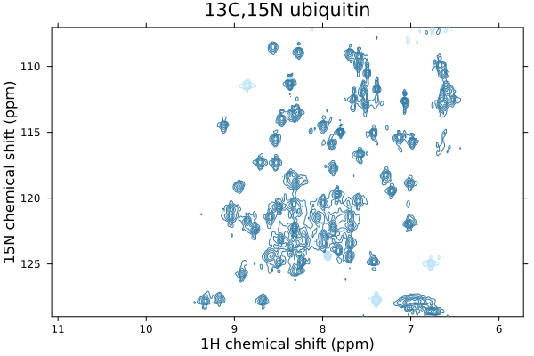

Getting started
Installing NMRTools
The Distributions package is available through the Julia package system by running Pkg.add("NMRTools"). Throughout, we assume that you have installed the package.
The examples in this tutorial also using the Plots package, which can be obtained similarly.
Plot a 1D spectrum
Let's load some example data. This can be a Bruker experiment directory, a specific pdata folder, or an NMRPipe-format file.
using NMRTools, Plots
spec = loadnmr("../../exampledata/1D_19F/1")5000-element NMRData{Float64,1} with dimensions:
F1Dim Sampled{Float64} LinRange{Float64}(-119.592, -124.163, 5000) ReverseOrdered Regular Points
-119.592 4671.52
-119.593 4675.19
-119.594 4680.0
-119.595 4685.86
-119.596 4692.51
-119.597 4699.53
-119.598 4706.36
⋮
-124.157 5891.3
-124.158 5885.71
-124.159 5879.72
-124.16 5873.64
-124.161 5867.74
-124.162 5862.25
-124.163 5857.34NMRTools contains Plots recipes for common types of spectrum. To plot our 1D spectrum, we just use the plot command:
plot(spec)
We could zoom in on a particular region using the usual xlims arguments from Plots, but we can also select a chemical shift range from the data directly. To do this, we use square brackets [...] to access the data like an array, but use the .. selector to specify our chemical shift range:
plot(spec[-124.5 .. -123])
All plots can be saved as high quality vector graphics or png files, using the savefig command:
savefig("myspectrum.pdf")Plot a 2D spectrum
Two-dimensional spectra can be plotted in exactly the same way as for 1Ds.
spec = loadnmr("../../exampledata/2D_HN/1")
plot(spec)
Contour levels are set to five times the noise level. The most convenient way to adjust this is simply to multiply or divide the spectrum by some scaling factor. You can also adjust the title - by default taken from the spectrum label - using the title keyword. Use an empty string (title="") to remove the title.
plot(spec / 2, title="spectrum divided by two")
Accessing your data
Spectrum data and associated axis information, metadata, etc, is encapsulated in an NMRData structure.
julia> spec = loadnmr("../../exampledata/1D_19F/1")5000-element NMRData{Float64,1} with dimensions: F1Dim Sampled{Float64} LinRange{Float64}(-119.592, -124.163, 5000) ReverseOrdered Regular Points -119.592 4671.52 -119.593 4675.19 -119.594 4680.0 -119.595 4685.86 -119.596 4692.51 -119.597 4699.53 -119.598 4706.36 ⋮ -124.157 5891.3 -124.158 5885.71 -124.159 5879.72 -124.16 5873.64 -124.161 5867.74 -124.162 5862.25 -124.163 5857.34
Data can be accessed with conventional array indexing, but also using the value-based selectors, Near and ..:
julia> spec[100:105]6-element NMRData{Float64,1} with dimensions: F1Dim Sampled{Float64} LinRange{Float64}(-119.683, -119.687, 6) ReverseOrdered Regular Points -119.683 4920.73 -119.684 4924.97 -119.685 4928.51 -119.685 4931.35 -119.686 4933.45 -119.687 4934.75julia> spec[Near(-124)]5808.748229980469julia> spec[-124 .. -123.5]547-element NMRData{Float64,1} with dimensions: F1Dim Sampled{Float64} LinRange{Float64}(-123.501, -124.0, 547) ReverseOrdered Regular Points -123.501 6001.3 -123.502 6008.11 -123.502 6015.39 -123.503 6022.93 -123.504 6030.49 -123.505 6037.79 -123.506 6044.57 ⋮ -123.994 5771.73 -123.995 5773.22 -123.996 5776.76 -123.997 5782.32 -123.998 5789.73 -123.999 5798.68 -124.0 5808.75
This also works for multidimensional data. For example:
julia> spec2d = loadnmr("../../exampledata/2D_HN/1")1216×512 NMRData{Float64,2} with dimensions: F1Dim Sampled{Float64} LinRange{Float64}(11.0712, 5.72249, 1216) ReverseOrdered Regular Points, F2Dim Sampled{Float64} LinRange{Float64}(129.0, 107.043, 512) ReverseOrdered Regular Points 129.0 128.957 … 107.129 107.086 107.043 11.0712 20.8555 88.9229 139.835 93.8359 40.3672 11.0668 -51.7852 12.9678 164.152 139.854 102.899 11.0624 -94.7793 -53.8916 125.39 129.348 119.876 11.058 -107.308 -94.2188 62.5664 90.1367 105.768 11.0536 -117.223 -125.776 … 21.3799 63.6924 96.2686 ⋮ ⋱ ⋮ 5.7445 147.816 316.704 288.039 163.503 15.2725 5.7401 319.171 397.131 -65.3184 -151.356 -236.952 5.7357 401.177 407.521 -305.667 -354.497 -385.464 5.73129 348.761 317.303 … -348.839 -373.441 -371.131 5.72689 208.9 188.013 -203.875 -225.342 -224.783 5.72249 55.4658 68.0029 -13.4932 -33.4531 -45.999julia> spec2d[8.1 .. 8.3, Near(124)]45-element NMRData{Float64,1} with dimensions: F1Dim Sampled{Float64} LinRange{Float64}(8.29779, 8.10409, 45) ReverseOrdered Regular Points and reference dimensions: F2Dim Sampled{Float64} LinRange{Float64}(124.015, 124.015, 1) ReverseOrdered Regular Points 8.29779 2439.44 8.29339 2407.37 8.28898 2961.7 8.28458 3801.93 8.28018 4461.66 ⋮ 8.1173 1841.04 8.1129 1772.44 8.10849 1679.61 8.10409 1565.78
A plain array of data for the spectrum can be obtained from this using the data command:
julia> data(spec)5000-element Vector{Float64}: 4671.5184326171875 4675.192687988281 4679.9979248046875 4685.8551025390625 4692.506896972656 4699.526428222656 4706.362731933594 4712.417419433594 4717.134460449219 4720.0810546875 ⋮ 5900.0340576171875 5896.165588378906 5891.2984619140625 5885.714294433594 5879.7239990234375 5873.638427734375 5867.738952636719 5862.253173828125 5857.3370361328125
Similarly, a plain vector containing axis values can be obtained from this using the data command, passing an additional argument to specify the dimension. This can either be a number or the axis type, e.g. F1Dim:
julia> data(spec, 1)5000-element LinRange{Float64, Int64}: -119.592, -119.593, -119.594, -119.595, …, -124.161, -124.162, -124.163